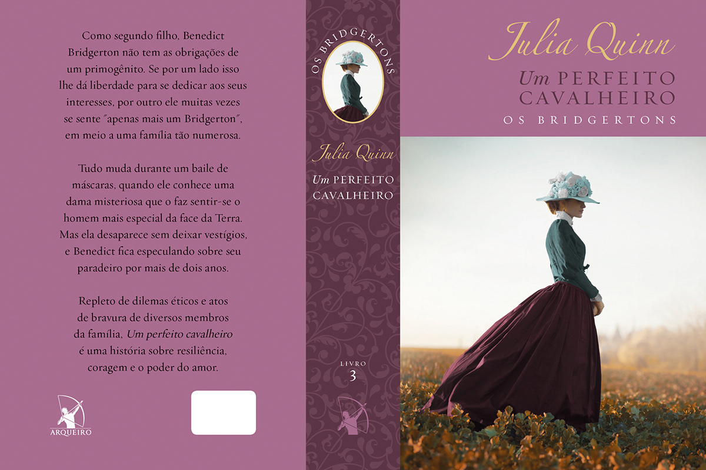
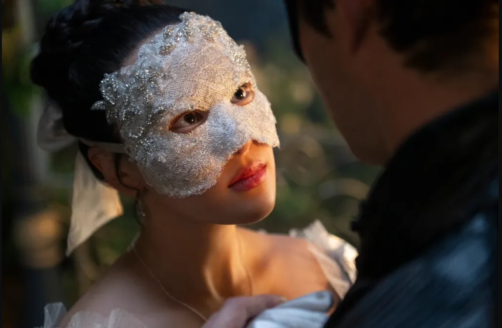
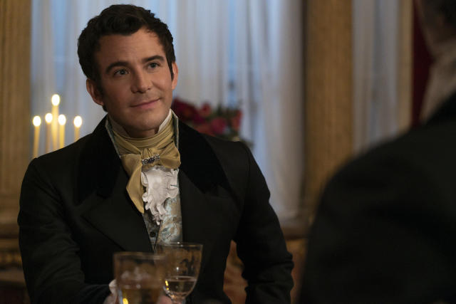

UDL: Universo das Letras.
O Universo das Letras é um site feito com o intuito de ajudar os leitores a encontrar a história perfeita para lerem. Aqui, compartilhamos sugestões de livros que marcaram gerações, emocionaram leitores e deixaram uma mensagem inesquecível.
Um Perfeito Cavalheiro
Sobre o livro:
"O livro "Um Perfeito Cavalheiro" é uma leitura cativante que combina romance, mistério e drama, levando o leitor a uma jornada cheia de emoções. A história, que tem como base a clássica fábula da Cinderela, traz uma protagonista forte e resiliente, Sophie Beckett, que vive sob a sombra da vergonha e da opressão, mas encontra seu "príncipe" moderno em Benedict Bridgerton. O livro é envolvente tanto pela trama quanto pelos personagens ricos e complexos, como o próprio Benedict, que, ao longo da história, passa por um processo de amadurecimento e redenção. A narrativa explora temas como amor verdadeiro, status social e superação de adversidades, com uma escrita envolvente que mantém o leitor ansioso pelo desenrolar da história. Ao mesmo tempo, o romance apresenta dilemas éticos e sociais da época, tornando a história mais profunda do que um simples conto de fadas. Com diálogos marcantes e um ritmo empolgante, a obra oferece uma leitura deliciosa que vai deixar o leitor torcendo para o final feliz do casal."
Por quê lê-lo?
Se você assistiu a série da Netflix "Bridgerton" e se encantou com Benedict Brridgerton, esse livro é ideal para você. Misturando um lindo romance, com cenas sensiveis e engraçadas, "Um Perfeito Cavalheiro" é tudo de bom que uma releitura de Cinderella entrega e um pouco mais.
Personagens Principais:
Sophie Maria Beckett (Baek)
Sophie é a personagem principal do 3° livro da saga "Os Bridgertons". Filha Bastarda do Conde de Penwood, a garota tem sua vida virada do avesso quando decide ir a um baile de máscaras escondida onde conhece Benedict Bridgerton e se apaixona a primeira vista.
Benedict Bridgerton
Benedict é o segundo filho da família Bridgerton e está procurando o sentido de sua vida quando conhece a Dama de Prateado em um baile de máscaras. O problema de ter se apaixonado a primeira vista é que a garota misteriosa simplesmente sumiu. Ele a procura por anos, até conhecer e se apaixonar por uma criada chamada Sophie, sem saber que ela é sua dama misteriosa.
Avaliação
Hyped_lia
Até agora, esse é o meu favorito (confesso que sempre gostei do conto da Cinderela). Estou prestes a começar a leitura de *Os Segredos de Colin Bridgerton*. Fiquei um pouco decepcionada quando Benedict sugeriu que ela fosse sua amante, mas entendo que, considerando seu status social na época, ele achava que essa era uma boa solução. Senti falta de cenas entre Sophie e Kate (protagonista do livro anterior) Até agora, foi a história com mais conexão e química entre os protagonistas. E, claro, não posso deixar de mencionar a mãe maravilhosa que é Lady Violet Bridgerton.
Adaptação
Os livros da saga Bridgerton foram adaptado como uma série na Netflix. A série tem uma temporada focada em cada irmão e seu agregado. A 4° temporada de Bridgerton, aquela focada em Benedict Bridgerton e Sophie Baek (que fora adaptada como uma mulher coreana na série), será lançada em 2026.